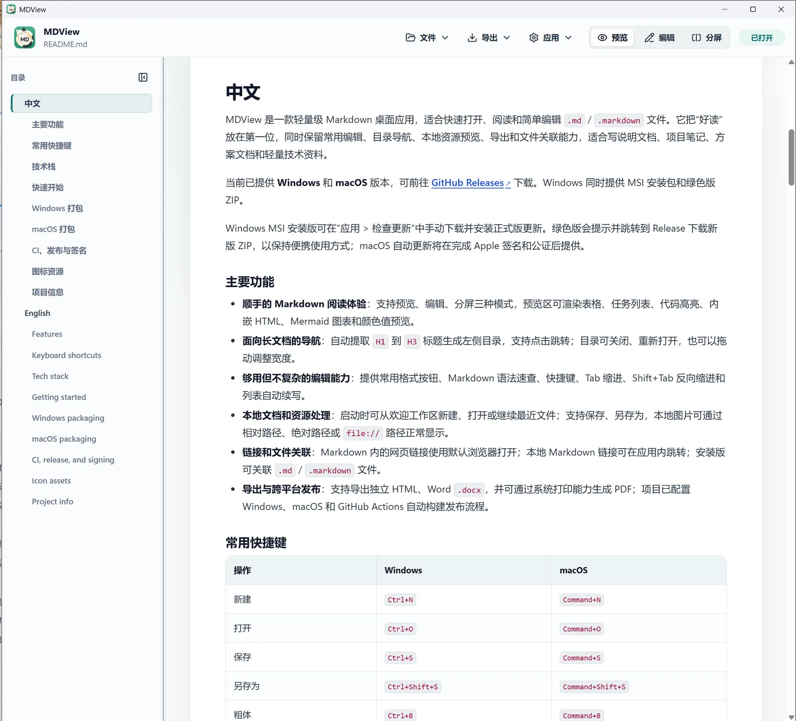

免费无广告
专注阅读体验，不包含任何广告。
MARKDOWN 阅读工具
v3.4.3
轻量、免费无广告的 Markdown 阅读器，支持目录导航、图表与公式；需要时也能编辑和导出。

专注阅读体验，不包含任何广告。
简洁高效，快速启动，流畅阅读。
下载即用，不需要创建账号。
为日常阅读和写作提供顺手的工具。
支持明暗主题、字体、字号和行距调整，打造舒适的阅读体验。
自动提取标题生成可折叠目录，支持点击跳转，并能恢复阅读进度。
支持 Mermaid 图表、LaTeX 公式、表格和代码高亮。
当前版本 v3.4.3
Windows 版需要预先安装 WebView2 Runtime。
了解版本更新情况。